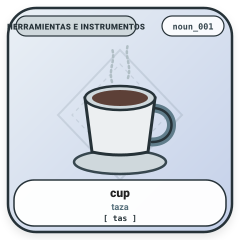

Pame Central (Oto-mangue) · Santa María Acapulco, San Luis Potosí

El pame central (xi'iuy) es una lengua de la familia oto-mangue hablada en Santa María Acapulco, San Luis Potosí, México. Es sumamente reconocida en la lingüística por su enorme complejidad morfológica distribuida en cuatro capas simultáneas.
Utilizada en las bases de datos de investigación (NoLePa y VeLePa). Representa con precisión los tonos (1, 2, 3 o H, L, F), consonantes geminadas (kk, pp, tt), vocales nasales (ã, ẽ, ĩ, õ, ũ), oclusión glotal (ʔ), nasal velar (ŋ) y fronteras de morfemas (-).
Utilizada por los hablantes nativos en Santa María Acapulco según las normas prácticas locales: reemplaza ʔ por ', h por j, africadas por ch, o por u, w por v, ŋ por ng (o ñ después de i), y omite tonos y consonantes dobles.
Los análisis morfológicos detallados y los léxicos flexionados de la flexión verbal y nominal del pame central por separado han sido publicados como VeLePa (Herce 2024) y NoLePa (Herce 2027):
Herce, Borja. (2024). “VeLePa: Central Pame verbal inflection in a quantitative perspective.” Morphology 34 (3): 281–319.
📄 Artículo (DOI): https://doi.org/10.1007/s11525-024-09426-x · 🗂️ Repositorio OSF: https://osf.io/xhyzm/
Herce, Borja. (2027). “NoLePa: Nominal inflection of Pame in quantitative perspective.”
🗂️ Repositorio OSF: https://osf.io/53pc9/
El trabajo de campo y la investigación que han hecho posible esta base de datos han contado con el apoyo de tres fuentes principales de financiación: